使用kubeadm创建多节点集群
本篇文章介绍使用 kubeadm 创建一个多节点的 K8S，使用 containerd 作为容器运行时，第一步，首先是准备 3 个虚拟机节点，使用 multipass 创建3台虚拟机，该镜像中自带 docker，无需再安装，使用如下命令创建：
multipass launch --name ctrlnode -d 40G docker
multipass launch --name node1 -d 40G docker
multipass launch --name node2 -d 40G docker
每个节点至少2GB内存，2个CPU，具体要求请看这里。创建成功之后，如下所示：
1 | $ multipass list |
VM 版本如下：
1 | ubuntu@node2:~$ lsb_release -a |
节点配置
在开始之前，三台节点做必要的设置。
swap
首先，禁止 swap：
sudo swapoff -a
sudo sed -i '/ swap / s/^\(.*\)$/#\1/g' /etc/fstab
防火墙
测试环境，直接关闭防火墙即可（Ubuntu）：
sudo ufw disable
桥接流量
转发 IPv4 并让 iptables 看到桥接流量，这部分内容来源于这里：
1 | $ cat <<EOF | sudo tee /etc/modules-load.d/k8s.conf |
通过运行以下指令确认 br_netfilter 和 overlay 模块被加载：
1 | $ lsmod | grep br_netfilter |
br_netfilter（Linux 内核中的一个模块，它主要用于管理网桥设备上的数据包过滤。 此模块允许在网桥设备上使用Netfilter（Linux内核的防火墙框架）的功能，例如iptables 和nftables。 它允许对网桥连接的两个网络段之间的数据包进行过滤。）
通过运行以下指令确认 net.bridge.bridge-nf-call-iptables、net.bridge.bridge-nf-call-ip6tables 和 net.ipv4.ip_forward 系统变量在你的 sysctl 配置中被设置为 1：
sysctl net.bridge.bridge-nf-call-iptables net.bridge.bridge-nf-call-ip6tables net.ipv4.ip_forward
hostname
为各个节点设置合适的名称，并且做域名解析：
sudo hostnamectl set-hostname "ctrlnode"
sudo hostnamectl set-hostname "node1"
sudo hostnamectl set-hostname "node2"
在3个节点的 /etc/hosts 文件中加入下面的解析条目：
1 | 192.168.67.8 ctrlnode |
containerd
这里选用 containerd 作为容器运行时，更多的容器运行时看这里。在使用 multipass 的 docker 模板创建的节点中，Docker 默认安装，作为 Docker 的一部分，continaerd 也会被安装。不过不管以哪种方式安装 containerd 之后，需要稍作配置，第一步生成默认配置：
1 | # sudo mkdir -p /etc/containerd |
配置cgroup驱动 驱动，在 /etc/containerd/config.toml 中设置：
1 | [plugins."io.containerd.grpc.v1.cri".containerd.runtimes.runc.options] |
然后重新启动：
1 | sudo systemctl restart containerd |
如果需要给 containerd 设置代理，用于拉取镜像。可以编辑文件 /etc/systemd/system/containerd.service.d/http-proxy.conf，加入自己的代理信息：
1 | [Service] |
然后重启：
1 | sudo systemctl daemon-reload |
设置 crictl 的运行时，使用 containerd，官方文档请看这里：
1 | runtime-endpoint: unix:///var/run/containerd/containerd.sock |
安装K8S
官方安装请看这里：
1 | 安装一些必要的工具 |
查看k8s可用版本：
sudo apt-cache madison kubeadm
1 | root@ctrlnode:/home/ubuntu# sudo apt-cache madison kubeadm |
安装指定版本：
sudo apt install -y kubeadm=1.28.5-1.1 kubelet=1.28.5-1.1 kubectl=1.28.5-1.1
锁定版本，不随 apt upgrade 更新：
sudo apt-mark hold kubelet kubeadm kubectl
国内安装请看这里：
1 | apt-get update && apt-get install -y apt-transport-https |
每个节点上的kubelet会选择一个容器运行时用于Pod管理，可以使用下面的命令进行查看：
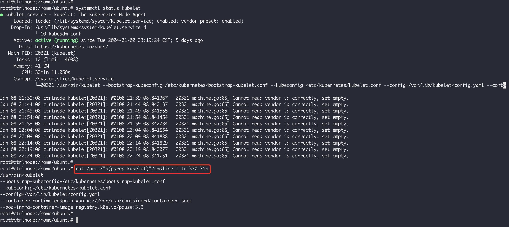
集群初始化
在集群初始化之前，我们可以先使用下面的命令在控制节点预先拉取镜像：
kubeadm config images pull --kubernetes-version 1.28.5
1 | root@ctrlnode:/home/ubuntu# kubeadm config images pull --kubernetes-version 1.28.5 |
在控制节点上执行下面的命令，kubeadm 的使用文档请看这里：
1 | sudo kubeadm init --control-plane-endpoint "ctrlnode:6443" --upload-certs --service-cidr=10.96.0.0/12 --pod-network-cidr=10.244.0.0/16 --kubernetes-version 1.28.5 |
init 会执行一系列的检查，例如内核版本版本是否满足要求（3.10及以上），Cgroups模块是否启用，是否安装容器运行时，ip、mount 这样的工具是否安装，Kubernetes的工作端口10250/10251/10252端口是不是已经被占用等等，完整的工作流程请看这里。执行成功之后，将会得到下面这样的输出：
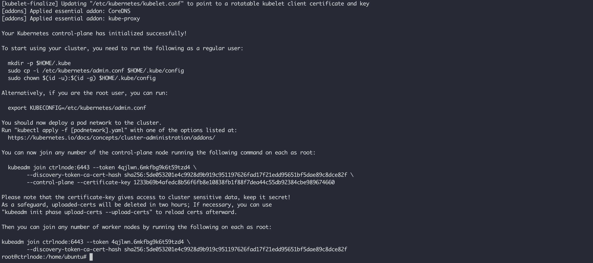
如果要使用普通用户管理集群，需要执行下面的命令为普通用户创建kubectl命令运行所需要的配置：
1 | mkdir -p $HOME/.kube |
如果用 root 用户使用集群，只需要设置如下的环境变量：
1 | export KUBECONFIG=/etc/kubernetes/admin.conf |
在加入新的节点之前，我们需要安装网络插件，这里以 flannel 为例：
kubectl apply -f https://raw.githubusercontent.com/coreos/flannel/master/Documentation/kube-flannel.yml
在控制面节点初始化之后输出了其他 worker 节点加入的命令。如果忘记了，可以使用 kubeadm token create --print-join-command 重新生成加入命令：
1 | root@ctrlnode:/home/ubuntu# kubeadm token create --print-join-command |
分别在 ndoe1 和 node2 执行之后，会有如下的输出：
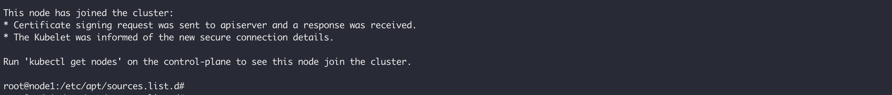
使用 kubectl get node 命令在控制节点上查看节点列表：
1 | root@ctrlnode:/home/ubuntu# kubectl get nodes -owide |
如果节点 NotReady 可能是由于网络插件或者 kube-proxy 未启动，等它们就绪之后再去查看节点就 Ready 了。在节点上使用 crictl ps 查看相关容器是否启动：
1 | root@node1:/home/ubuntu# crictl ps |
默认情况下，control-plane 所在节点被设置成了污点（Taint），不允许 Pod 调度到这类节点，例如:
kubectl describe node ctrlnode
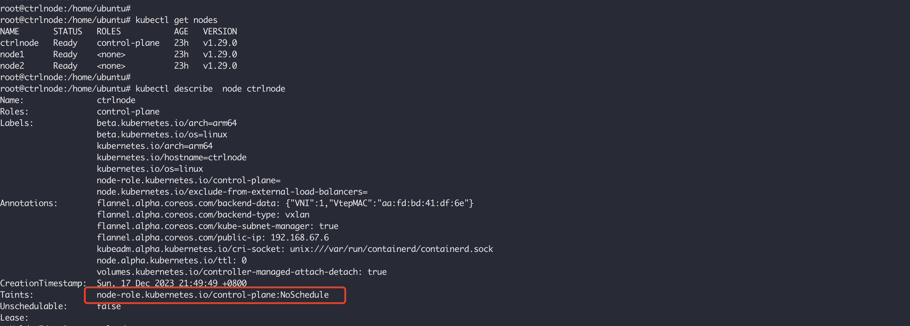
测试环境中，可以使用下面的命令清除污点，以便让 Pod 被允许调度到此类节点：
kubectl taint nodes ctrlnode node-role.kubernetes.io/control-plane:NoSchedule-
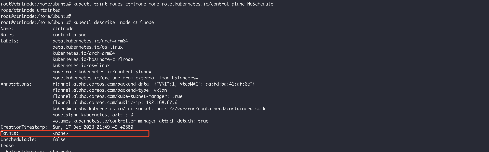
可以通过下面的命令给节点设置角色，例如，给 node1 和 node2 设置 worker 角色：
kubectl label node node1 node-role.kubernetes.io/worker=worker
kubectl label node node2 node-role.kubernetes.io/worker=worker
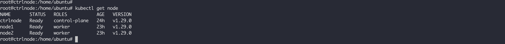
部署应用
为了测试集群的可用性，部署一个 Deployment 测试，这里使用官方的无状态应用示例，并且将其扩展为3个Pod：
kubectl apply -f https://k8s.io/examples/application/deployment-update.yaml
kubectl scale --current-replicas=2 --replicas=3 deployment/nginx-deployment
等待部署成功，查看：
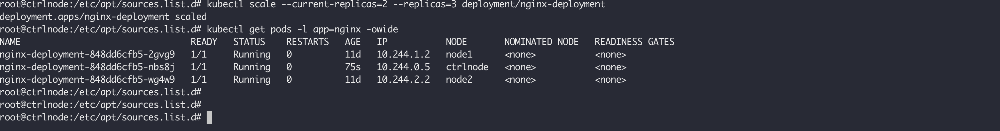
可以使用如下的命令查看 pod 中有哪些容器：
kubectl get pods nginx-deployment-848dd6cfb5-2gvg9 -o jsonpath={.spec.containers[*].name}
使用如下的命令进入 pod 的容器中：
kubectl exec nginx-deployment-848dd6cfb5-2gvg9 -n default -it -c nginx – /bin/bash
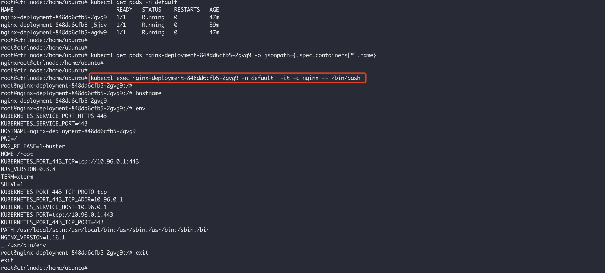
Dashboard
Dashboard 是基于网页的 Kubernetes 用户界面，可以使用 Dashboard 将容器应用部署到 Kubernetes 集群中，也可以对容器应用排错，还能管理集群资源，同时也展示了 Kubernetes 集群中的资源状态信息和所有报错信息。
执行下面的命令安装 Dashboard：
kubectl apply -f https://raw.githubusercontent.com/kubernetes/dashboard/v2.7.0/aio/deploy/recommended.yaml
执行成功之后，你将会看到如下的输出：
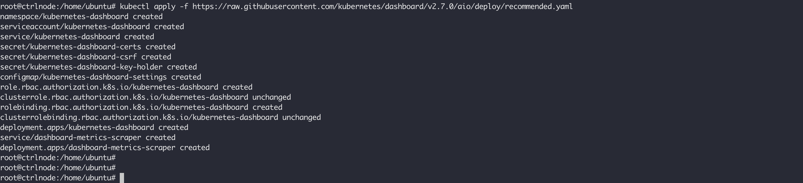
等待pod 启动成功之后，执行如下命令，将会看到创建成功的服务：
kubectl get svc -n kubernetes-dashboard
1 | root@ctrlnode:/home/ubuntu# kubectl get svc -n kubernetes-dashboard |
默认创建的服务是 ClusterIP 类型，没法通过集群外部进行访问，通过相面的命令将它修改为 NodePort 类型的：
kubectl edit svc -n kubernetes-dashboard kubernetes-dashboard
修改内容为，将 spec.type 从 ClusterIP 修改为 NodePort。修改成功之后，再次查看服务，类型更新为 NodePort，也分配了随机的节点端口 32688：
1 | root@ctrlnode:/home/ubuntu# kubectl get svc -n kubernetes-dashboard |
使用 ctrlnode 的节点访问 https://192.168.67.6:30175/，登录页面打开，我们使用 Token 进行访问，使用下面的命令生成 Token：
kubectl create token kubernetes-dashboard -n kubernetes-dashboard
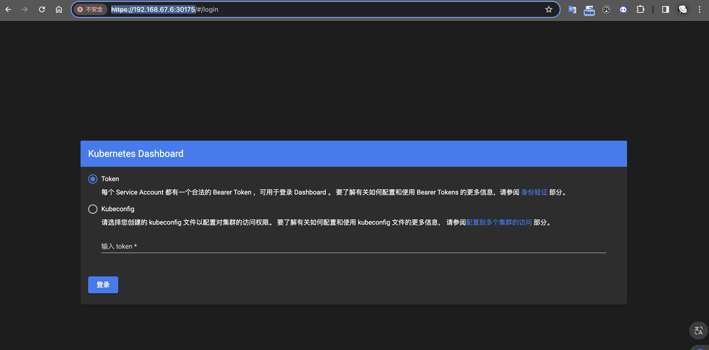
但是默认创建的 kubernetes-dashboard 只能访问 default 命名空间的服务，权限太小了。我们可以手创建新的 ServiceAccount，并且给它绑定 cluster-admin 这个角色：
kubectl create serviceaccount cluster-admin-dashboard -n kubernetes-dashboard
创建成功之后，使用如下的命令查看创建的 ServiceAccount：
kubectl get serviceaccount -n kubernetes-dashboard
1 | root@ctrlnode:/home/ubuntu# kubectl get serviceaccount -n kubernetes-dashboard |
然后给它绑定 cluster-admin 这个角色:
1 | kubectl create clusterrolebinding cluster-admin-dashboard --clusterrole=cluster-admin \ |
使用下面的命令重新生成 Token：
kubectl create token cluster-admin-dashboard -n kubernetes-dashboard
退出使用新的Token重新登录之后，就可以看到所有的命名空间下的资源了：
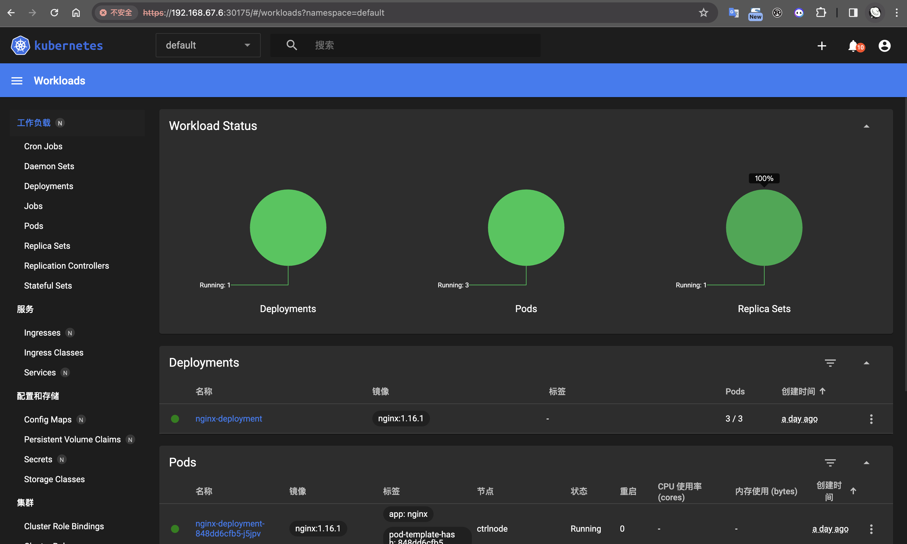
参考文章
- 使用kubeadm部署一套高可用k8s集群 for Ubuntu
- Deploy Kubernetes Cluster on Ubuntu 20.04 with Containerd
- Kubernetes Service Discovery
- iptables — a comprehensive guide
- A Deep Dive into Iptables and Netfilter Architecture
- Kubernetes Service iptables 网络通信验证
- Docker Overlay2 Cleanup: 5 Ways to Reclaim Disk Space
- Use the OverlayFS storage driver
- Details of the Kubernetes Cluster Network